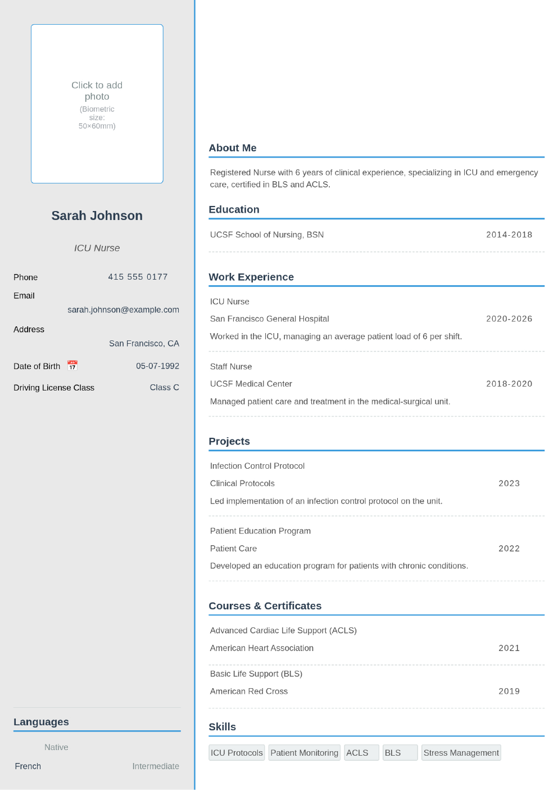

Nurse CV Example and Writing Guide
✨ Edit this template on MobilCV - free, no signup, in 1 minute!
🚀 Edit This Template on MobilCVWhen applying for nursing roles, your CV should clearly reflect your clinical competencies and certifications. Hospitals and healthcare providers pay close attention to specific details in a nurse's CV.
Lead With Your License and Certifications
Your nursing license, the school you graduated from, and any specialty certifications (ICU, OR, ER, etc.) should be visible near the top of your CV - these are usually the first things reviewers check.
Detail Your Clinical Experience
Clearly state the units you've worked in (medical-surgical, ICU, pediatrics, OR, etc.) and how long you worked there. Mention the patient populations you cared for and the procedures you're experienced with.
- Example: "Worked in the ICU for 2 years, managing an average patient load of 6 per shift."
- Example: "Assisted in 200+ surgical procedures as an operating room nurse."
Technical Skills and Certifications
Be sure to include certifications such as Basic Life Support (BLS) and Advanced Cardiac Life Support (ACLS) - many healthcare employers list these as prerequisites.
Don't Forget Soft Skills
Stress management, empathy, and teamwork are just as important as technical knowledge in nursing. Back these up with concrete examples where possible.
Conclusion
Presenting your certifications, clinical experience, and technical skills clearly makes a real difference in the hiring process. Click the button below to start filling in a free CV template based on these tips.
📄 Filled-In Example CV
A sample CV filled in for a Nurse position, following the tips above. You can fill in your own information the same way.

✨ Create your CV now!
🚀 Create Your CV With MobilCV